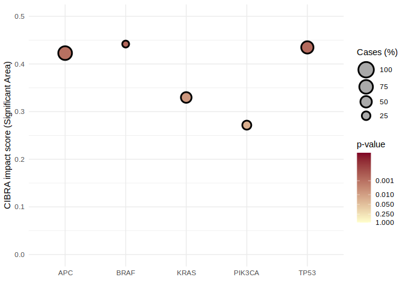

Installation
You can install the development version of CIBRA from GitHub with:
# install.packages("devtools")
devtools::install_github("AIT4LIFE-UU/CIBRA")Contact
If you encounter any issues with the package or have questions please contact Soufyan Lakbir (s.lakbir@vu.nl) or place an issue.
Example
For extensive examples of the utility of CIBRA, please consult the vignettes.
# load functions
library(CIBRA)
library(BiocParallel)
# load transcription data and genomic alterations from TCGA COADREAD
count_data <- CIBRA::TCGA_CRC_rna_data
mutation_profile <- CIBRA::TCGA_CRC_non_silent_mutation_profilePrepare a definition matrix for analysis which indicates which samples are cases and controls.
In this example we will only focus on 6 genes: the tumor suppressor genes APC and TP53, the oncogenes KRAS, BRAF and PIK3CA and the often mutated gene TTN in colorectal cancer.
# prepare data for CIBRA
# select genes of interest
goi <- c("APC", "TP53", "KRAS", "BRAF", "PIK3CA")
# filter mutation profile for only selected genes
definition_matrix <- mutation_profile[goi]
# fix sample names for intersect between the two datatypes
rownames(definition_matrix) <- stringr::str_replace_all(rownames(definition_matrix), "-", ".")
# select intersect between definition matrix and count data
sample_list <- intersect(rownames(definition_matrix), colnames(count_data))
# select data and definition matrix as the intersect
count_data <- count_data[sample_list]
definition_matrix <- definition_matrix[sample_list,]
# show definition matrix
knitr::kable(head(definition_matrix))| APC | TP53 | KRAS | BRAF | PIK3CA | |
|---|---|---|---|---|---|
| TCGA.3L.AA1B.01A | SNV | WT | WT | SNV | SNV |
| TCGA.4N.A93T.01A | WT | SNV | SNV | WT | WT |
| TCGA.4T.AA8H.01A | SNV | WT | SNV | WT | WT |
| TCGA.5M.AAT4.01A | SNV | SNV | SNV | WT | WT |
| TCGA.5M.AAT5.01A | SNV | SNV | WT | WT | WT |
| TCGA.5M.AAT6.01A | SNV | WT | SNV | WT | WT |
Set the parameters to use with CIBRA and run CIBRA.
You can provide a larger definition matrix and indicate which columns to test in CIBRA. The number of permutation iterations to perform is recommended to be 50 to give an indication of the intrinsic variation in the dataset given the size of cases and control. However to make the example run quicker we have set it to 0 which turns of the internal permutation.
# focus on APC
columns <- goi
# set up parameters for CIBRA
control_definition <- "WT" # reference condition
confidence <- 0.1 # confidence threshold for the proportion calculation
# set permutation to 0 to skip permutations
iterations = 0 # number of permutation iterations to be performed per condition
register(SnowParam(4)) # set number of cores to be used
# run CIBRA with default DE analysis method (DESeq2)
CIBRA_res <- run_CIBRA(count_data, as.data.frame(definition_matrix),
columns = columns,
control_definition = control_definition,
confidence = confidence,
iterations = iterations,
parallel = TRUE)
#> [1] "SNV"
#> [1] "APC" "SNV"
#> [1] "SNV"
#> [1] "TP53" "SNV"
#> [1] "SNV"
#> [1] "KRAS" "SNV"
#> [1] "SNV"
#> [1] "BRAF" "SNV"
#> [1] "SNV"
#> [1] "PIK3CA" "SNV"If the iterations where not set to 0, the average permutation signal measures and the standard deviation would have been reported.
# print the report table
knitr::kable(CIBRA_res$CIBRA_results)| def | col | proportion | sign_area | investigated | control | proportion_rnd_avg | proportion_rnd_sd | sign_area_rnd_avg | sign_area_rnd_sd | iterations |
|---|---|---|---|---|---|---|---|---|---|---|
| SNV | APC | 0.4165 | 0.4228 | 358 | 113 | NA | NA | NA | NA | 0 |
| SNV | TP53 | 0.429 | 0.4348 | 276 | 195 | NA | NA | NA | NA | 0 |
| SNV | KRAS | 0.3291 | 0.3297 | 198 | 273 | NA | NA | NA | NA | 0 |
| SNV | BRAF | 0.4552 | 0.4418 | 66 | 405 | NA | NA | NA | NA | 0 |
| SNV | PIK3CA | 0.2841 | 0.2716 | 131 | 340 | NA | NA | NA | NA | 0 |
Assess significance of the signal measures
# calculate the pvalue by comparing to a reference distribution generated with DESeq2
perm_data <- CIBRA::perm_dist_crc_tcga
# use the gamma test to also calculate a fitted p-value
CIBRA_res_stat <- permutation_test(CIBRA_res$CIBRA_results, perm_data, test = "gamma")
# print the report table
knitr::kable(CIBRA_res_stat$results)| def | col | proportion | sign_area | investigated | control | proportion_rnd_avg | proportion_rnd_sd | sign_area_rnd_avg | sign_area_rnd_sd | iterations | perm_test_prop | perm_test_area | pvalue_prop | pvalue_sign_area |
|---|---|---|---|---|---|---|---|---|---|---|---|---|---|---|
| SNV | APC | 0.4165 | 0.4228 | 358 | 113 | NA | NA | NA | NA | 0 | 0.0000000 | 0.0000000 | 0.0000172 | 0.0009079 |
| SNV | TP53 | 0.429 | 0.4348 | 276 | 195 | NA | NA | NA | NA | 0 | 0.0000000 | 0.0000000 | 0.0000089 | 0.0007003 |
| SNV | KRAS | 0.3291 | 0.3297 | 198 | 273 | NA | NA | NA | NA | 0 | 0.0052910 | 0.0070547 | 0.0012682 | 0.0065272 |
| SNV | BRAF | 0.4552 | 0.4418 | 66 | 405 | NA | NA | NA | NA | 0 | 0.0000000 | 0.0000000 | 0.0000022 | 0.0006016 |
| SNV | PIK3CA | 0.2841 | 0.2716 | 131 | 340 | NA | NA | NA | NA | 0 | 0.0176367 | 0.0291005 | 0.0089891 | 0.0212896 |
visualize the results
require(ggplot2)
require(dplyr)
require(scales)
# visualize the results
plot_data <- CIBRA_res_stat$results %>% select(col, investigated, control, sign_area,
pvalue_sign_area)
p <- ggplot(plot_data, aes(y = as.numeric(sign_area),
x = factor(col), fill = pvalue_sign_area)) +
geom_point(aes(size = as.numeric(investigated)/(as.numeric(investigated)
+ as.numeric(control))*100),
shape = 21,
color = "black", stroke = 1.5) +
ylab("CIBRA impact score (Significant Area)") + xlab("") +
scale_fill_continuous('p-value', low = "#ffffcc", high = "#800026",
breaks = c(0.001, 0.01, 0.05, 0.25, 1),
trans = compose_trans("log10", "reverse"),
limits = c(1,0.00001)) +
scale_size_area(name = "Cases (%)",
breaks = c(25, 50, 75, 100),
limit = c(0,100), max_size = 8) +
ylim(c(0,0.5)) +
theme_minimal() +
guides(size = guide_legend(reverse = TRUE, override.aes=list(fill = "darkgrey")))
print(p)
Other examples
A basic example to estimate the system-wide impact of a genomic alteration: Basic assessment of the impact of a genomic alteration
An example for generating a reference permutation distribution for statistical testing: genereting reference permutation distribution
An example for refining on type of alteration: Refining on alteration type
An example to set up a genome-wide screen: Genome-wide screen
An example to refine on genomic location: Refining on genomic location
An example to assess the similarity between two alterations: Assessing similarity between alterations